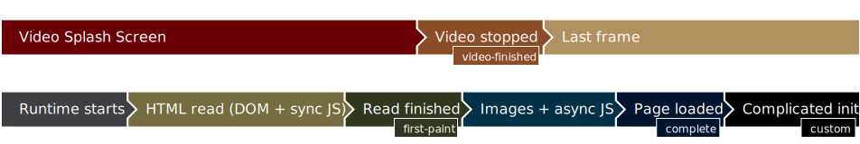

This is a demo without Video Splash Screen configuration. This screen should appear when the page is read and the DOM structure is known. If there are still some out-of-line elements, like images or async script, they will be loaded after this step.
The main difference between this example and first-paint Video Splash Screen
is that no videos are played here before application loads.
Demo calls console.log at certain points. Visible through DevTools, those
logs can help see the relationship between splash screen and HTML application.